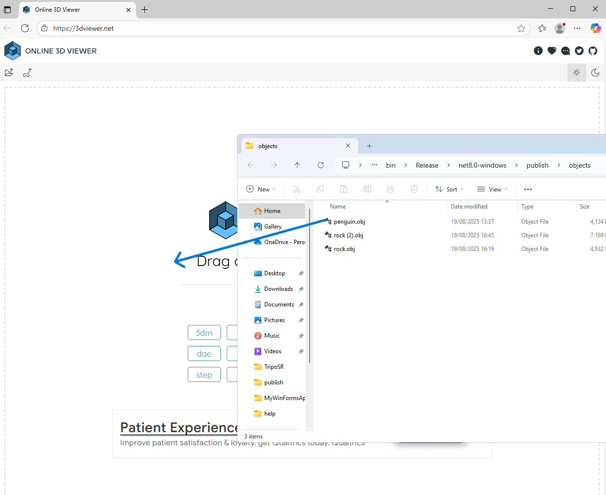

1. Introduction
Welcome to Paradise Designer AI Images and Models App! This guide shows you how to set up and use the main features step by step.
The app can be navigated with your keyboard. Press up and down keys to move around the different fields. Press Enter to click a button. Press Spacebar to open the list of Microphones and Enter to select a Microphone.
2. App Settings
- Select your microphone from the dropdown list.
- Enter a filename for saving your image or 3D model.
- If no microphone is available, type your prompt directly into the text box.
3. Record From Microphone
- Click Record from Microphone.
- Speak your prompt.
- Click Stop Recording when finished.
- Wait while Whisper AI transcribes your speech into the textbox.
- The timer shows how long you recorded.
4. Generating Images
- Click Generate Image and wait for Stable Diffusion to process.
- Once Successfully Generated appears, check the images folder.
- Click Open Image Folder to view all saved images.
5. Generating 3D Models
- Click Generate 3D Object.
- Wait while Stable Diffusion and TripoSR generate the object.
- When Successfully Generated appears, check the 3D objects folder.
- Click Open 3D Folder to view all saved models.
6. View 3D Objects
- Click View Objects to open the folder of models.
- The app also opens a website to preview 3D objects.
- Drag and drop a model file into the website to view it.

7. Import to Game
- Click Import to Game.
- A folder with your 3D objects opens.
- Select the object you want to import into the game.
8. AI Models Usage
- Speech Transcription: Whisper AI
- Image Generation: Stable Diffusion
- 3D Object Generation: Stable Diffusion, TripoSR